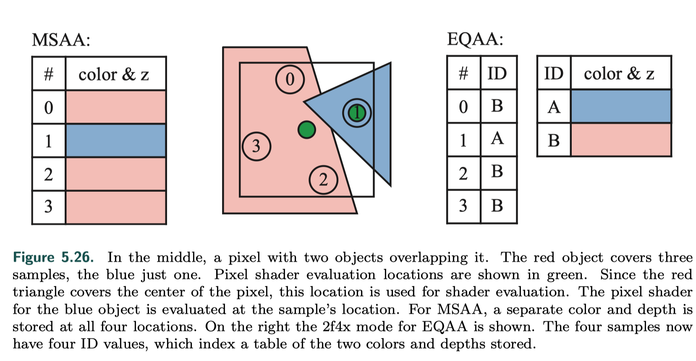

Real-Time antialiasing summary
why AA
{kind=link}
- what cause aliasing
Aliasing occurs when a signal is being sampled at too low a frequency

sampling and filtering theory
{kind=link}
熟悉的奈奎斯特采样定理
要想信号可以被原样还原, the sampling frequency has to be more than twice the maximum frequency of the signal to be sampled, 否则还原出来的信号会混叠。 frequency 是 1 / T, 时域里变化周期的倒数。 但是rendering里的三维空间is normally never band-limited when rendered with point samples, 所以完全解决走样问题是几乎不可能的。
reconstruction
{kind=link}
{kind=link}
resampling
{kind=link}
screen-based antialiasing
more samples
基于的宗旨基本上都是每个pixel多一些samples.
- SuperSampling AA 渲一个更大分辨率的，再下采样。
- MSAA  每个物体对应一个像素的pixel shader只执行一次，但是一个pixel对应多个coverage samples，各个sample各取所需。
- TAA 每帧相机做一些jitter，利用上一帧或前几帧的渲染结果，变相的也是多了一些samples，但是对于每一帧来说sampling的开销并没有增多。
{kind=link}
sampling patterns
研究表明，人眼对于near-horizontal and near-vertical edges更为敏感，其次是45度对角。
- RGSS（rotated grid）
- Halton sequence generates samples in space that appear random but have low discrepancy
- Quincunx sharing samples among pixels
- FLIPQUAD
{kind=link}
{kind=link}
{kind=link}
Morphological Methods
{kind=link}
- FXAA (fast approximate antialiasing)
- 判定哪些像素是边缘 sharp changes in brightness.
- 边缘像素做blend
- SMAA (subpixel morphological antialiasing) A logical development of the FXAA algorithm. This technique not only blurs the contrast points, but also uses a kind of logic – it finds and recognizes patterns in the form of lines, curves, boundaries of objects, and blurs them in the direction of these lines.